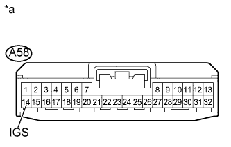
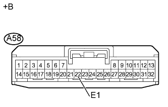

DTC B2410 Нарушение связи с левым электродвигателем устройства поворота фар |
DTC B2411 Нарушение связи с правым электродвигателем устройства поворота фар |
| Код DTC | Условие обнаружения DTC | Неисправный участок |
| B2410 | ЭБУ устройства поворота фар обнаруживает ошибки обмена данными с левым электродвигателем устройства поворота фар. |
|
| B2411 | ЭБУ устройства поворота фар обнаруживает ошибки обмена данными с правым электродвигателем устройства поворота фар. |
|
| 1.ПРОВЕРЬТЕ DTC |
Сбросьте коды DTC (Нажмите здесь).
Проверьте коды DTC (Нажмите здесь).
|
| ||||
| OK | ||
| ||
| 2.ПРОВЕРЬТЕ ЖГУТ ПРОВОДОВ И РАЗЪЕМ (ЭБУ УСТРОЙСТВА ПОВОРОТА ФАР - АККУМУЛЯТОРНАЯ БАТАРЕЯ) |
|  |
Отсоедините разъем A58 ЭБУ устройства поворота фар.
Измерьте напряжение в соответствии со значениями, приведенными в таблице.
| Контакты для подключения диагностического прибора | Положение переключателя | Заданные условия |
| A58-14 (IGS) - масса | Зажигание включено | 11 - 14 В |
| *a | Вид спереди разъема со стороны жгута проводов: (к ЭБУ устройства поворота фар) |
|
| ||||
| OK | |
| 3.ПРОВЕРЬТЕ ЖГУТ ПРОВОДОВ И РАЗЪЕМ (ЭБУ УСТРОЙСТВА ПОВОРОТА ФАР - МАССА) |
|  |
Отсоедините разъем A58 ЭБУ устройства поворота фар.
Измерьте сопротивление в соответствии со значениями, приведенными в таблице ниже.
| Контакты для подключения диагностического прибора | Условие | Заданные условия |
| A58-22 (E1) - масса | Всегда | Менее 1 Ом |
| *a | Вид спереди разъема со стороны жгута проводов: (к ЭБУ устройства поворота фар) |
|
| ||||
| OK | |
| 4.ПРОВЕРЬТЕ ЖГУТ ПРОВОДОВ И РАЗЪЕМ (ЭБУ УСТРОЙСТВА ПОВОРОТА ФАР - ФАРА) |
Отсоедините разъем A58 ЭБУ устройства поворота фар.
Отсоедините разъем A62*1 или A63*2 фары.
Измерьте сопротивление в соответствии со значениями, приведенными в таблице ниже.
| Контакты для подключения диагностического прибора | Условие | Заданные условия |
| A58-29 (SML) - A62-2 (SML) | Всегда | Менее 1 Ом |
| A58-29 (SML) - масса | Всегда | 10 кОм или более |
| Контакты для подключения диагностического прибора | Условие | Заданные условия |
| A58-10 (SMR) - A63-2 (SMR) | Всегда | Менее 1 Ом |
| A58-10 (SMR) - масса | Всегда | 10 кОм или более |
|
| ||||
| OK | |
| 5.ПРОВЕРЬТЕ ФАРУ (РАБОТУ) |
Временно замените фару (электродвигатель устройства поворота фар) новой или заведомо исправной (Нажмите здесь).
Проверьте коды DTC (Нажмите здесь).
|
| ||||
| OK | ||
| ||